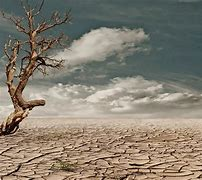

Degradación ambiental:
La falta de sustentabilidad puede llevar a la sobreexplotación de recursos naturales, la deforestación, la pérdida de biodiversidad, la contaminación del aire, del agua y del suelo, y otros tipos de degradación ambiental. Esto puede dañar los ecosistemas y reducir la capacidad de la Tierra para sostener la vida.
Cambio climático:
El aumento de las emisiones de gases de efecto invernadero debido a la quema de combustibles fósiles, la deforestación y otras actividades humanas está causando un calentamiento global significativo. Esto tiene consecuencias devastadoras, como el aumento del nivel del mar, eventos climáticos extremos más frecuentes y graves, y la alteración de los patrones climáticos, lo que afecta la agricultura, la seguridad alimentaria y la salud humana.
Pérdida de biodiversidad:
La pérdida de hábitats naturales, la deforestación, la contaminación y otras amenazas causadas por la actividad humana están provocando una rápida disminución de la biodiversidad en todo el mundo. La pérdida de especies y la degradación de los ecosistemas pueden tener consecuencias graves y difíciles de revertir para el funcionamiento de los ecosistemas y la provisión de servicios ecosistémicos vitales para los seres humanos
Impactos en la salud humana:
La contaminación del aire, del agua y del suelo, así como la exposición a productos químicos tóxicos, pueden causar una variedad de problemas de salud, como enfermedades respiratorias, cardiovasculares, cáncer, enfermedades transmitidas por el agua y trastornos relacionados con la exposición a productos químicos. Estos impactos pueden ser especialmente graves para las comunidades vulnerables y marginadas.